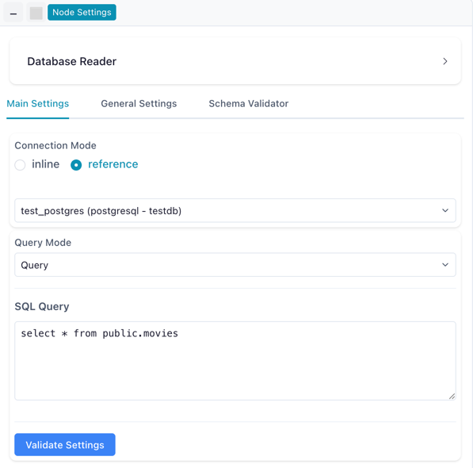
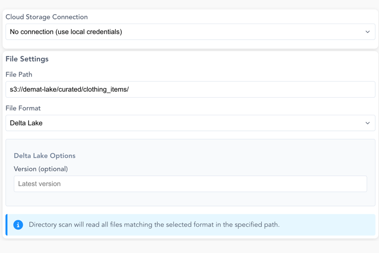
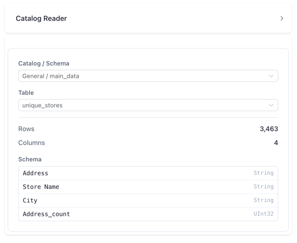

Input Sources
Every flow starts here. Input actions have no incoming connection — they produce the first table, whether that comes from a file on your disk, a database, cloud storage, a streaming topic, an API, or the catalog.
| Action | What it does | Lite |
|---|---|---|
| Read data | Load a local CSV, Excel, Parquet, Arrow, NDJSON or Avro file, gzipped or not | ● |
| List files | Turn a folder's contents into a table of file metadata | |
| Manual input | Type or paste a small dataset directly | ● |
| Read from Database | Query a table or write SQL against a database | |
| Read from cloud provider | Read from S3, Azure Data Lake or Google Cloud Storage | |
| Read from Catalog | Read a registered catalog table, physical or virtual | ● |
| REST API | Fetch JSON from an HTTP endpoint, with auth and pagination | |
| Kafka Source | Consume messages from a Kafka or Redpanda topic | |
| Google Analytics | Run a GA4 report | |
| Flow Input | Named entry point when this flow runs inside another |
In Flowfile Lite
The browser-only Flowfile Lite build reads local files, host-provided datasets (External Data, a Lite-only action), Manual input and Read from Catalog. It has no backend, so databases, cloud storage, APIs and Kafka are not available.
Read data
Loads a local file. Pick the file and the format-specific settings below adapt to it.
Settings
| Setting | Description |
|---|---|
| Path | The file to read. Accepts a flow parameter inside the path, e.g. ${data_dir}/file.csv. Browse files opens a picker. |
| Read | Single file, or a directory scan that reads every same-format file in a folder and stacks them into one table. Single file by default. |
| File format | The format of the files inside a scanned folder — a bare directory has no extension to sniff. Shown for a directory scan. |
| File path column | Optional name for an extra column holding each row's source file, so you can tell which file it came from. Shown for a directory scan. |
| Format | Extensions | Notes |
|---|---|---|
| CSV | .csv, .txt, .tsv, plus their .gz variants |
Full parsing control, see below. Gzipped files are decompressed on the fly |
| Excel | .xlsx, .xls |
Sheet and cell-range selection, see below |
| Parquet | .parquet |
No extra settings; read lazily |
| Arrow IPC / Feather | .arrow, .ipc, .feather |
Stores schema and types natively, read lazily so large files stream without being held in memory |
| NDJSON | .ndjson, .jsonl, plus their .gz variants |
One JSON record per line, schema inferred, read lazily |
| Arrow IPC stream | .arrows |
The footer-less streaming variant of Arrow IPC (what write_ipc_stream and arrow-js produce). Read eagerly on the compute worker |
| Avro | .avro |
Row-based binary format that embeds its own schema. Read eagerly, on the compute worker rather than the core service |
CSV settings
| Setting | Description |
|---|---|
| Has Headers | yes treats the first row as column names; no assigns Column 1, Column 2, … |
| Delimiter | The character separating values, such as ,, ; or \t. |
| Encoding | File encoding, such as UTF-8 or ISO-8859-1. |
| Quote Character | Character enclosing text fields so delimiters inside them are not split on. |
| New Line Delimiter | How line ends are detected, such as \n or \r\n. |
| Schema Infer Length | How many rows are scanned to infer column types. |
| Truncate Long Lines | Truncate over-long lines instead of raising an error. |
| Ignore Errors | Continue past rows that fail to parse. |
Excel settings
Type inference picks the reader. Enabled, a more permissive reader parses the sheet and assigns a data type per column; disabled, a faster reader returns values as stored. A sheet the fast reader cannot handle — blank cells or stray values outside the table — falls back to the permissive reader automatically, noted in the run log.
| Setting | Description |
|---|---|
| Sheet Name | Which sheet to read. Defaults to the first. |
| Start Row / Start Column | Zero-based index where reading begins. Default 0. |
| End Row / End Column | Zero-based index where reading stops. 0 means read everything. |
| Has Headers | Treat the first row as column names. |
| Type Inference | Infer a data type per column, or return values as stored. |
List files
Turns a folder into a table — one row per file, with its path, size and timestamps. Use it to inventory a drop folder, filter down to the files you actually want, and feed their paths into whatever comes next.
Settings
| Setting | Description |
|---|---|
| Folder | The folder to list. Accepts a flow parameter, e.g. ${data_dir}/incoming. |
| File types | Extensions to keep (csv, parquet, …). Leave empty to list everything. |
| Include | List files, folders, or both. |
| Hidden files | Include dotfiles and hidden entries. Off by default. |
| Search subfolders | Descend into subfolders, up to Max depth. |
| Max rows | Cap the number of rows returned. |
Output columns — fixed, so downstream actions know the schema before the flow runs.
| Column | Type | Description |
|---|---|---|
file_name |
String | Name including the extension |
file_path |
String | Absolute path — the column downstream readers consume |
directory |
String | Absolute path of the containing folder |
relative_path |
String | Path relative to the folder you selected |
file_type |
String | Extension without the dot |
size_bytes |
Int64 | Size on disk |
last_modified |
Datetime | Last modification time |
created_date |
Datetime | Creation time |
is_directory |
Boolean | true for folders |
Reading every file in a folder
To read a folder of files rather than inventory it, Read data has a Directory scan mode that reads them as one table. Reach for List files when you want the file metadata itself — to audit a folder, filter on size or modification date, or drive downstream logic from the file list.
Manual input
Creates a dataset by typing it in or pasting from the clipboard. Useful for lookup tables, test fixtures, and the handful of rows you would otherwise keep in a stray spreadsheet.
Settings
The drawer is a small spreadsheet rather than a form: Add Column and Add Row grow the grid, and you type directly into the cells.
| Setting | Description |
|---|---|
| Column name | Typed into the header cell. New columns arrive as Column 1, Column 2, … |
| Data type | The type each column's values are cast to: String, Date, Datetime, Time, Int64, Int32, Int16, Float64, Float32 or Boolean. String by default, re-inferred when you paste. |
| Paste CSV/TSV | Opens a panel for bulk-loading delimited text, with a Tab / Comma / Auto-detect choice and a First row is headers toggle (on by default). |
| Edit JSON | Opens the same table as a JSON array of row objects, for editing or pasting wholesale. |
Read from Database
Loads data from a database table or a custom SQL query. Supports PostgreSQL, MySQL, SQLite, DuckDB, SQL Server and Denodo.
Validate Settings checks the connection before you run anything. Connect to PostgreSQL is a step-by-step walkthrough.

Connection modes
| Mode | Description |
|---|---|
| Reference | Use a saved connection from the Connection Manager. Recommended. |
| Inline | Enter credentials directly in the node settings. |
Settings
| Setting | Description |
|---|---|
| Schema | Database schema to query, e.g. public. |
| Table | Table to read from. |
| Custom SQL | Write a query instead of reading a whole table. |
Read from cloud provider
Reads directly from cloud object storage: AWS S3 (including S3-compatible services like MinIO), Azure Data Lake Storage, and Google Cloud Storage.
Authenticate with a saved cloud connection, or with No connection to use the credentials of the machine running Flowfile. No connection ignores saved endpoints and is unavailable on a multi-user server; see Running a node without a connection.

Settings
| Setting | Description |
|---|---|
| File Path | Full URI including the scheme, e.g. s3://bucket/folder/file.csv. Browse navigates the connection and picks one. The drawer warns while the path is empty or has no scheme, and such a node fails before reading anything: Cloud storage reader has no source path… or Cloud storage path '…' is not a URI…. |
| File Format | CSV, Parquet, JSON, Delta Lake or Iceberg. |
| Scan Mode | A single file, or a directory scan that reads every matching file in a folder. |
CSV adds Has Headers, Delimiter (default ,) and Encoding (UTF-8 or UTF-8 Lossy). Delta Lake adds a Read selector and an optional Version, which reads a past version of the table instead of the latest; the drawer lists the table's recent commits to pick from.
Reading only what changed
For a Delta table, the Read selector reads the table's change feed instead of its rows.
| Option | Description |
|---|---|
| Full table (default) | The table as it is now, or at the picked Version. |
| Changes since version | Everything committed after a version you pick. |
| Changes since time | Everything committed at or after a timestamp. |
Every change mode adds _change_type, _commit_version and _commit_timestamp to the table's own columns and offers Include row values from before each update. There is no Changes since last run option: a bare path has no cursor, so a flow parameter supplies the starting version or time when the window has to move from run to run.
The table must have change tracking turned on. If it does not, picking a change mode shows a warning with an Enable change tracking button, and a run fails with an error saying how to turn it on. Picking a Version puts the selector back on Full table, since time travel and change reads are mutually exclusive. Change reads are not available for gs:// paths.
Read from Catalog
Reads a table registered in the Catalog — either a physical table backed by Delta or Parquet files, or a virtual table resolved on demand.
Once a table is selected the node shows its row count, column count, and schema.

Settings
| Setting | Description |
|---|---|
| Catalog / Schema | The namespace containing the table. |
| Table | The table itself. Virtual tables are marked with a bolt icon. |
Reading history from an SCD2 table
When the selected table is tracked with SCD2, a History selector appears.
| Option | Description |
|---|---|
| All records (default) | Every version of every row. |
| Active records | Only the current version of each row, where valid_to is empty. |
| Active at a point in time | The version that was current at a given moment. |
The default is all records: reading an SCD2 table without setting History returns full history, not the current snapshot. Set it to Active records when the downstream flow expects one row per business key.
Reading only what changed
The Read selector reads the table's change feed instead of its rows.
| Option | Description |
|---|---|
| Full table (default) | The table as it is now. |
| Changes since last run | Everything committed after the version this reader last processed. Keeps a cursor, optionally named so several flows share one position. |
| Changes since version | Everything committed after a version you pick. |
| Changes since time | Everything committed at or after a timestamp. |
Every change mode adds _change_type, _commit_version and _commit_timestamp to the table's own columns. The Read selector is unavailable for virtual, SCD2 and SQL-mode readers, and while the reader is pinned to a table version. If the table is not tracked yet, the drawer offers an Enable change tracking button.
Reading virtual tables
A virtual table resolves at run time and behaves identically to a physical one from the flow's perspective. Optimized virtual tables deserialize a stored execution plan instantly, keeping full Polars query optimization (predicate and projection pushdown); standard virtual tables run the producer flow end to end. See Virtual Flow Tables.
SQL mode
The node also has a SQL mode for querying across every catalog table, physical and virtual, registered by name in a Polars SQL context — so you can join across the whole catalog. See the SQL editor.
REST API
Fetches JSON from an HTTP endpoint. Supports GET and POST, custom headers and query parameters, several authentication schemes, and automatic pagination. JSON is the only supported response format.
Settings
| Setting | Description |
|---|---|
| Method | GET or POST. Default GET. |
| URL | The request URL. Required. |
| Record path | Dot-path to the array of records inside the response, e.g. data.items. Leave empty to use the top level. Nested objects are flattened into dotted column names. |
| Headers | Optional request headers, as name/value pairs. |
| Query parameters | Optional query-string parameters, as name/value pairs. |
| JSON body | Body sent with POST requests. Must be valid JSON. |
Authentication — the credential is never stored on the node; it references a reusable secret by name.
| Type | Description |
|---|---|
| None | No authentication. Default. |
| API key | Sends the key under a configurable Key name (default X-API-Key), in either the header or a query parameter. |
| Bearer token | Sends the secret as an Authorization: Bearer <token> header. |
| Basic | HTTP Basic authentication with a username and a secret password. |
Pagination
| Strategy | Description |
|---|---|
| None | A single request. Default. |
| Offset / limit | Increments an offset parameter (default offset) by the page size, passed via a limit parameter (default limit, default 100). |
| Page number | Increments a page parameter (default page) from a configurable start page (default 1). |
| Cursor / next-page token | Follows a cursor read from the response body (dot-path) or a response header, sent back via a configurable request parameter. |
Paginated reads are bounded by Max pages (default 1000) and an optional Max records cap. Timeout defaults to 30 seconds and Max retries to 3.
Fetch sample runs one capped request and previews the inferred columns. Skip it and the schema is inferred on the first run instead.
Kafka Source
Consumes messages from a Kafka or Redpanda topic using a saved Kafka connection. Message values are parsed as JSON, the only supported value format.
Settings
| Setting | Description |
|---|---|
| Kafka Connection | A saved connection holding bootstrap servers and security settings. |
| Topic Name | The topic to consume. Fetch Topics lists what the broker has, or type the name. |
| Start Offset | Where to begin when no tracked offset exists: latest (default) or earliest. |
| Max Messages | Most messages to read in one run. Default 100,000. |
| Poll Timeout (seconds) | How long to poll the broker. Default 30. |
| Sync Name | Optional. A unique key tracking consumer offsets between runs, so each run continues where the last stopped. |
Infer Schema previews the columns parsed from sample messages.
Incremental reads and resetting offsets
With a Sync Name set, Flowfile tracks the consumer group's offsets so each run only reads new messages. Reset Offsets clears the tracked position, and the next run re-reads from the configured Start Offset.
Google Analytics
Runs a Google Analytics 4 report using a saved connection, authenticated with a service-account key or via OAuth.
Settings
| Setting | Description |
|---|---|
| Google Analytics Connection | A saved GA connection, holding its credentials and an optional default property. |
| GA4 Property ID | The numeric property to query, e.g. 123456789. Prefilled from the connection's default when set. |
| Start Date / End Date | The report range. Accepts GA4 relative tokens (7daysAgo, yesterday, today) or absolute YYYY-MM-DD dates. Defaults 7daysAgo → yesterday, and a Quick Range dropdown fills common windows. |
| Metrics | One or more GA4 metrics, e.g. sessions, totalUsers. At least one is required. |
| Dimensions | Optional breakdowns, e.g. date, pagePath, eventName. |
| Row Limit | Optional cap. Leave blank to fetch every row GA returns, paginated in 100k-row chunks. |
Filters apply to any selected metric or dimension, and Flowfile routes each to GA4's dimension or metric filter automatically. Multiple filters of the same kind combine with AND.
- Dimension (string) operators:
equals,not_equals,contains,begins_with,ends_with,regex,in_list,not_in_list. Matching is case-insensitive unless theAatoggle is on. - Metric (numeric) operators:
equals,not_equals,less_than,less_equal,greater_than,greater_equal,between.
Sort By takes one or more entries on a selected metric or dimension, ascending or descending. GA4 applies them in list order — combine with Row Limit for top-N reports.
Cache slow reports
Fetching from Google Analytics can be slow. Enable Cache Results on the node, or write the result to the catalog, for faster iteration.
Flow Input
A named entry point for a subflow — a flow called from another flow. It has no upstream connection: when the flow runs on its own it serves the sample data in its settings, and when a parent calls it through a Run Flow node, the parent's dataset replaces that sample.
Settings
| Setting | Description |
|---|---|
| Input name | The port name the parent binds data to. Default input. |
| Sample data | The dataset served when the flow runs standalone. |